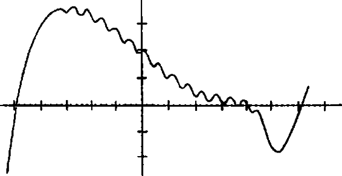
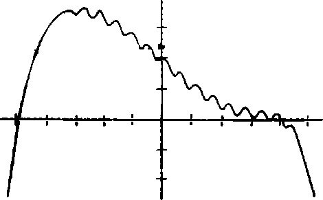
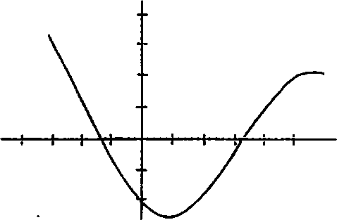

O pazar Hasan, Lindsey, Katrina, ÖC, DKP ve TÇB yle “dolanmaya” gitti. Ertesi akşam tekrar dolanmaya gidip geceyarısını geçe döndüğünde Colini artık on dokuzun on yedisinde tutan Teoreminin üstünde çalışırken buldu. Colin hâlâ III. Katherine’i ama daha da önemlisi XIX. Katherine’i tutturamıyordu.
“Nabersin?” diye sordu Hasan.
“Nabersin bir kelime değil,” diye yanıdadı Colin kafasını kaldırmadan.
“Günüme güneş gibi doğuyorsun, Sİngleton. Kışın buzlarını eriten mayıs ayı gibisin.”
“Çalışıyorum,” dedi Colin. Hasanın gezegendeki diğer herkes gibi olmaya ne zaman başladığından tam emin ola
mıyordu fakat bunun gerçekleştiği açıkça ortadaydı ve açıkça sinir bozucuydu.
“Katrina’yı öptüm,” dedi Hasan. Ve Colin kalemini bırakıp sandalyesiyle dönüp konuştu: “Kimi naptın?”
“Naptın bir kelime değil,” diye taklit yaptı Hasan.
“Dudağından mı?”
“Hayır, gerizekâlı, göz büzgeninden. Herhalde dudağından.”
“Sebep?”
“Colin’in pikabının arkasında oturmuş, bira şişesi çeviriyorduk ama deli gibi sarsılıyorduk çünkü ormanda bir yere gitmeye çalışıyorduk. Binleri bira şişesini çevirince şişe manyak gibi bir yerlere savrulup yuvarlanıyordu filan, o yüzden de kimse kimseyi öpmüyordu. O yüzden dedim ki oynamaktan ne çıkar. Sonra şişeyi bir çevirdim ve sana yemin ederim hâlâ engebeli arazide gitmemize rağmen şişe minicik bir alanda döndü, ki o şişe havaya firlamadıysa bu olsa olsaTanrı’nm işi olabilir, sonra Katrina’mn tam önünde durdu ve hatun, ‘Gerçekten şanslıyım,’ dedi ve şaka yapmıyordu, kâfir! Çok ciddiydi. Sonra bana doğru uzandığı sırada bir çukura mı ne girdik, o yüzden kucağıma düşer gibi oldu ve kestirmeden dudağıma uzandı ki sana yemin ederim diliyle harbiden dişlerimi yaladı.” Colin gözlerini dikmiş, şüpheyle bakıyordu. Hasan’ın bunu uydurup uydurmadığım merak ediyordu. “Yani tuhaftı, ıslak ve pasaklı bir iş filan ama keyifli sayılır. En güzel kısmı elimi yüzüne koyup aşağı baktığımda gözleri kapalıykenki halini görmekti. Şişmanlardan filan mı hoşlanıyor, nedir? Her neyse, yarın akşam onu Taco Hell’e götürüyorum. Gelip beni alacak.
Benim de olayım bu işte.” Sınttı. “Fıstıklar Babacık’a geliyor çünkü Babacık’ın arabası yok.”
“Sen ciddisin,” dedi Colin.
“Ben ciddiyim.”
“Bir saniye, pikaptaki şişenin öylece durması olayının mucize olduğunu mu düşünüyorsun?” Hasan başıyla onayladı. Colin kurşun kaleminin silgisini masaya vurduktan sonra ayağa kalktı. “Ve kızla evlenmeyecek olsan Tanrı seni o kızla öpüştürmezdi,yani Tanrı, benim hemoroidiTourette sendromundan muzdarip bir Fransız olduğumu zannetmiş bir kızla evlenmeni istiyor, öyle mi?”
“Götlük yapma işte,” dedi Hasan tehdit edercesine.
“Ay Çok Dini Bütün Bey’in, pikapların arkasında kızlarla fingirdemesine şaşırdım sadece, olay o. Muhtemelen üstünde pamuklu futbol kazağıyla boktan bira içiyordun.”
“Neyin peşindesin? Bir kızla öpüştüm. Sonunda. Hem de gerçekten seksi, gerçekten tatlı bir kızla. Bok topakları işte. Zorlama artık.”
Colin sebebini bilmese de zorlamaya devam etmek zorundaymış gibi hissediyordu. “Neyse ne. Katrina’yh yiyiştiğine inanamıyorum, o kadar. O günkü kadar enayi ve alık değil miydi?” *
Bunun üstüne Hasan uzanıp Colini kabarık saçlarından yakaladı. Onu olduğu gibi sürükleyip duvara yapıştırdı. Hasan, Colin in karın boşluğuna, tam da midesindeki deliğin bulunduğu yere bastırırken çenesi sımsıkıydı. “Bok topakları dedim mi, demedim mi, kâfir? Soktuğumun bok topaklarına riayet
edeceksin! Bana bak, kajrga filan çıkmadan önce gidip yatacağım. Neden seninle kavga etmek istemediğimi bilmek istiyor musun? Çünkü kavga çıkarsa kaybederim.” Hâlâ dalga geçiyor, diye düşündü Colin. Sürekli dalga geçiyor, köpürdüğü zaman bile. Hasan banyodan odasına geçerken ve Colin Teorem üstünde çalışmak için oturduğunda kıpkırmızı olmuş ıslak yüzünden hüsran dolu yaşlar akıyordu. “Nişanlarını” sonuçlandıramamaktan nefret ediyordu. Dört yaşından beri nefret etmişti; babası, Latince yirmi beş düzensiz fiilin çekimini öğrenmesini “günlük nişan” belirlemişti ancak günün sonunda Colin sadece yirmi üçünü ezberleyebilmişti. Babası onu azarlamamış olabilirdi fakat Colin başarısız olduğunu biliyordu. Artık nişanlar daha karmaşıktı belki ama hâlâ oldukça basitlerdi: Bir en iyi arkadaş, bir Katherine ve bir teorem istiyordu. Ve Gutshot’ta neredeyse üç haftanın sonunda, başladığı andakinden daha kötü bir yerdeymiş gibi görünüyordu.
Hasan ile Colin ertesi sabah konuşmamayı başardılar... tek bir kez bile. Colin, Hasanın ona, en az onun Hasana sinirlendiği kadar sinirli olduğunu açıkça anlamıştı. Colin kenetlediği çenesiyle sessizlik içinde Hasanın önce kahvaltısını öfkeyle bıçaklamasını, ardından yaşlı ama huzurevlik kadar yaşlı olmayan bir fabrika emeklisinin sehpasına kayıt cihazını çarparak koyuşunu seyretmişti. Hasan’ın kocamışa, o çocukken Gutshot’taki hayatın nasıl olduğunu husumet dolu, tekdüze bir tonla sorarken sesine yansıyan kızgınlığı duyabiliyordu. Artık en iyi hikâyecileri bitirmişler ve geriye Kuzey Carolina’daki
Ashevüle’i 1961 haziranında mı yoksa temmuzunda mı ziyaret ettiğine beş dakika boyunca karar veremeyenler kalmış gibi görünüyordu. Colin yine de dikkatini veriyordune de olsa bu onun hep yaptığı iştifakat bejin gücünün büyük kısmını bambaşka bir yere yönlendirmişti. Genel olarak Hasanın ona götlük yaptığı zamanları, onun alay konusu olduğu seferleri, kendisinin Katherinlemesiyle ilgili Hasanın ettiği tüm küçümseme dolu laflan katalogluyordu. Şimdi Hasan da Katrinlemeye başladığından etrafta dolanan, Colinl geride bırakan bir tip haline gelmişti.
Lindsey ÖC’le markette takılmak için o gün onlan ekmişti. O yüzden Colin, Hasan ve tüm günü tekeline alan tek bir kocamışla baş haşaydılar. Yaşlı adam yedi saattir neredeyse hiç durmadan konuşmasına rağmen Colinln dünyası tüyler ürpertecek kadar sessizdi, ta ki Lindsey yi almak için adamın evinden çıktıklarında pes edene kadar.
“Şimdi çok banal bir şey söylüyormuşum gibi olacak ama bence sen çok değiştin,” dedi Colin, kocamışın garaj yolunda yürürlerken. “Ve benimle dalga geçerin diye seninle takılmaktan da yoruldum.” Hasan karşılık vermek yerine yolcu koltuğuna geçip kapıyı çarparak kapadı. Colin de binip arabayı çalıştırdı ve Hasan ondan sonra patladı.
“Nankör göt, ben senin her ayrılığından sonra arkam toplarken, yatak odanda götünü yerden kazırken, seninle muhatap olmayan her soktuğumun kızıyla ilgili bitmek tükenmek bilmez zırvalamalarını, atıp tutmalarım dinlerken, tüm bunları hayatındaki en son kıçına tekme yeme haberini öğrenmek için
yanıp tutuştuğumdan değil de tamamen senin için yaptığım hiç aklının ucundan geçmedi mi acaba? Sen benim hangi problemimi dinledin, sikkafa? Hayatında bir kere olsun benimle saatlerce oturup beni dinledin mi, en iyi arkadaşının yoluna ne zaman bir Katherine çıksa kendisine satış koyulan şişko bir herif olmamla alakalı sızlandığımı duydun mu? Benim hayatımın da en az seninki kadar kötü olabileceği, saniyenin binde birinde bile aidinin ufacık bir köşesinden hiç mi geçmedi? Dâhi filan olmadığım ve yapayalnız olduğunu, bir de üstüne kimsenin seni dinlemediğini düşün. Bir kızla öpüştüm işte. Ne olmuş yani? Öleyim mi? Eve sana bu hikâyeyi anlatmak için hevesle geldim çünkü dört sene boyunca seninkileri dinledikten sonra en nihayetinde benim de bir hikâyem olmuştu. Ve sen o kadar bencil bir yavşaksın ki tek bir saniyeliğine bile soktuğumun şu hayatının Colin Singleton gezegeninin etrafında dönmediğini fark edemiyorsun.” Hasan nefes almak için duraksadı ve Colin gün boyunca en çok canım sıkan şeyi dile getirdi.
“Ona Colin dedin,” dedi Colin.
“Asıl probleminin ne olduğunu ben sana söyleyeyim,” diye devam etti Hasan ona kulak asmadan. “Birilerinin seni terk edebileceği fikrine katlanamıyorsun. O yüzden herhangi normal bir insanın yapacağı gibi benim adıma mutlu olmak yerine sinirleniyorsun çünkü kafan, ‘ay olamaz Hasan artık beni sevmiyor’ modunda çalışıyor. Sitzpinkler herif! Birilerinin seni bırakıp gideceği fikriyle öyle dehşete kapılıyorsun ki tüm o soktuğumun hayatım geride bırakılmamak üzerine kurmuşsun. Ama işe yaramayacak, kâfir. Yani bu... hani bu sadece aptalca
değil, faydasız da. Çünkü bu yüzden iyi bir arkadaş ya da iyi bir erkek arkadaş ya da artık her neyse o kişi olamıyorsun çünkü tek düşündüğün ‘ay beni sevmeyecekler ay beni sevmeyecekler’ ve ne var biliyor musun, sen öyle davrandığın zaman seni kimse sevmiyor. Al sana teorem!”
“Ona Colin dedin,” diye tekrar etti Colin, sesi titremişti. “Kime Colin dedim?”
“ÖC’e.”
“Hiç de bile.”
Colin başını aşağı yukarı salladı.
“Dedim mi?”
Başını tekrar salladı.
“Emin misin? Of tabii ki eminsindir. Eh. Özür dilerim. O konuda da ben götlük yapmışım.”
Colin marketin otoparkına saptıktan sonra arabayı durdurdu ama inmek için hamle yapmadı. “Haldi olduğunu biliyorum. Yani benim bencil bir yavşak olmamla ilgili filan.” “Yani her zaman değilsin. Ama olsun. Bırak, olma işte.” “Nasıl yapabileceğimi bilmiyorum ki,” dedi Colin. “Geride bırakılmaktan, sonsuza kadar tek başına kalmaktan ve dünyaya hiçbir şey ifade etmemekten korkmayı nasıl bırakırsın ki?” “Bayağı zekisin,” diye karşılık verdi Hasan. “Sen bir yolunu bulursun kesin.”
“Harika bence,” dedi Colin bir süre sonra. “Katrina olayı yani. Şaka maka bir kızla öpüştün. Bir kızla. Yani ben senin eşçinsel olabileceğini düşünüyordum,” dedi ciddi ciddi.
“En iyi arkadaşım daha yakışıklı olsaydı olabilirdim,” dedi Hasan.
“Ben de tüm o yağ katmanlarının altından penisini bulabilecek olsaydım olabilirdim.”
“Lan ben iki yüz kilo alsam bile Babafıngo’nun dizime kadar indiğini görebilirsin.”
Colin gülümsedi. “Kız şanslı.”
“Ne yazık ki evlenmediğimiz takdirde ne kadar şanslı olduğunu asla bilemeyecek.”
Sonra Colin tekrar konuya döndü. “Bazen bana pislik yapıyorsun ama. Benden sahiden nefret etmiyormuşsun gibi davransan daha iyi olurdu.”
“Dostum... Şimdi burada oturup sana benim en iyi arkadaşım olduğunu, seni sevdiğimi, müthiş bir dâhi olduğun için geceleri sana sarılıp yatmak istediğimi filan mı söyleyeyim istiyorsun? Çünkü öyle bir şey yapmayacağım. Siztpinklerimsi olur yoksa. Ama senin dâhi olduğunu düşünüyorum gerçekten. Çok ciddiyim. Bence hayatında her ne soktuğumun şeyini istiyorsan onu yapabilirsin ve bu fena güzel bir şey.”
“Teşekkürler,” dedi Colin, sonra arabadan indiler ve kaputun önünde karşı karşıya geldiler, Colin biraz kollarım uzatır gibi oldu, Hasan şakasına onu itti ve birlikte markete girdiler.
OC kurutulmuş et paketlerini düzeltirken Lindsey kasarım arkasındaki sandalyeye oturmuş, çıplak ayaklarım kasanın yanma dayamış, dergisini okuyordu.
“Pişt,” dedi ÖC. “Bu akşam biriyle çıkıyormuşsun diye duydum.”
“Aynen, tamamen senin müthiş sürücülüğün sayesinde. O çukura girmeseydin kucağıma düşmeyecekti.”
“Rica ederim. Seksi kız, değil mi?”
“Hey!” dedi Lindsey başım dergiden kaldırmadan. “Seksi olan benim!”
“Bebeğim, kızma,” dedi ÖC. “Colin,” diye devam etti, “Has senin dolanmayı sevmediğini söyledi ama önümüzdeki hafta sonu ava gelmen lazım.”
“Çağırdığın için teşekkürler,” dedi Colin ki bu gerçekten hoştu. Hiçbir savunma oyuncusu ya da oyun kumcu veya futbolla ilişiği olan herhangi bir insan onu herhangi bir şey yapmaya hiç çağırmamıştı. Ama Colin anında XIX. Katherine’i Marie Caravolli’ye tercih etmesinin sebebini düşündü. Bu dünyada kişinin kendi türüyle kalmasının en iyisi olduğuna inanıyordu. “Nasıl silah kullanılacağım bilmiyorum ne yazık ki.”
“Bence bir yaban domuzu paketlersin,” dedi ÖC. Colin, Hasana baktı, dostu gözlerini kocaman açmış başıyla hafifçe onaylıyordu. Colin bir saniyeliğine domuz avım pas geçecekti fakat bunu Hasan’a borçlu olduğunu tahmin ediyordu. Bencil bir yavşak olmamanın bir yolunun, istemese bile arkadaşıyla bir şeyler yapmaktan geçtiği kanısına varmıştı. Bu bir yaban domuzunun ölümüyle sonuçlanabilecek olsa bile. “Tamam,” dedi Colin ÖCe değil Has’a bakarak.
“Tamam o zaman. Siz market kapanana kadar buraya göz kulak olacağınıza göre ben çıkıyorum. Fabrikada çocuklarla buluşacağız. Bovlinge gidiyoruz.”
Bunun üstüne Lindsey dergiyi bıraktı. “Bovlingi seviyorum,” dedi.
“Erkek erkeğe takılacağız, bebeğim.”
Lindsey dudak büldiyormuş gibi yaptıktan sonra gülümsedi ve vedalaşmak için ayağa kalktı. ÖC tezgâhın üstünden uzanıp dudağına bir öpücük kondurdu, sonra da dışarı çıktı.
Hollis beş buçuktan önce işinin bölünmesini istememesine rağmen marketi erkenden kapayıp eve gittiler. Hollis salondaki kanepede oturmuş, “Burada yardımına ihtiyacımız var. Eğer fiyata bakarsan...” diyordu ki onların içeri girdiğini gördü ve “Seni sonra aranm,” deyip telefonu kapadı. “Size kaç kere dedim. .. Beş buçuğa kadar çalışıyorum ve bölünmemem lazım.” “Hollis, şu Marcus denilen adama niye arazi satıyorsun?” “Bu seni hiç ilgilendirmez ve konuyu değiştirmeye çalışmazsan çok iyi olur. Saat beş buçuğa kadar evden uzak duracaksınız. Size çalışın diye para veriyorum hatırlarsanız. Ve Lindsey Lee Wells, senin bugün Bay JafFrey’nin evinde olmadığım biliyorum. Bu tip şeyleri öğrenemeyeceğimi mi sanıyorsun?”
“Bu akşam biriyle randevum var o yüzden yemeğe kalamayacağım,” diye araya sıkıştırdı Hasan.
“Ben de Colinl yemeğe çıkaracağım,” dedi Lindsey. “Bu Colin’i,” diye konuyu netleştirdi onun kolunu parmağıyla dür
terek. Hollis’in yüzü ışıldadı; Colin eşit derecede şaşkınlık ve kafa karışıklığıyla Lindsey’ye baktı.
“Hepiniz dışarıdaysanız bu akşam biraz da olsa çalışabilirim o zaman,” dedi Hollis.
Colin “randevu” öncesinde kalan saaderini Teorem üstünde çalışarak geçirdi. Yarım saat içinde K19’u halletmişti. Problemin kötü matematikte değil, boş beklentide yattığı ortaya çıkmıştı: Colin Teorem’i eğe büke K19’un grafiğim şu hale getirmeye çalışmıştı:

Kısacası yeniden bir araya geleceklerine güvenmişti. Teorem’in geleceği öngörebileceğini, K19\m ona ne zaman döneceğini tahmin edebileceğini sanmıştı. Ancak Teorem’in kendi etkisini . göz önünde bulundurmasının mümkün olmayacağına karar vermişti. Böylelikle daha önce arabada Lindsey yle çıkardığı formülle67 XIX. Katherine’le o ana kadarki ilişkisini yansıtabilmeyi başarmıştı:
67 Tüm o harfleriyle güzel olan.

Saat beş olduğunda tehlikeli sayılacak kadar yakındı. Katilerine isimli hız trenini on sekiz kez yakalamıştı. Fakat yapamadığı şey hayli önemliydi: III. Katherine’i kâğıda dökememişti ve on dokuz Katherine’in sadece on sekizini kestirebilen bir denklemle Nobel Ödülü Komitesi’nin kapısını çalamazdı.68 Sonraki iki saat boyunca III. Katherine’in (asıl ismi: Katilerine Mutsensberger) her yönünü, beynini o kadar sıradışı yapan hassasiyet ve berraklıkla inceledi. Ancak yine de III Anomalisi adım verdiği meseleyi çözümleyemiyordu. Diğer on sekizi doğru bir şekilde kestiren denklem bunda şöyle çıkıyordu:

68 Matematik dalında bir Nobel Ödülü olmayabilirdi belki ama Barış ödülünde ufak bir şansı olabilirdi.
Grafiğin güler yüzlülüğü Colinuı İÜ. tarafından terk edilmediği, onu terk ettiğine işaret ediyordu ki bu gülünçtü. III. Katherine hakkında her şeyi hatırlayabiliyordu ve tabii diğerlerini de, ne de olsa her şey hakkında her şeyi hatırlıyordu fakat III. Katherine hakkında bir şeyi kaçırdığı ortadaydı.
Teorem üstünde çalışırken Colin o kadar odaklanıyordu ki defterinin dışındaki dünya âdeta yok oluyordu, o yüzden arkasından Lindsey’nin, “Hadi akşam yemeğine,” dediğini duyunca şaşkınlıkla irkildi. Arkasına dönünce açık kapıdan kafasını uzattığını gördü. Ayağında Converse’ler, dar kot üstüne mavi bir atlet giymişti vesanki ne sevdiğini biliyormuş gibi— makyaj yapmamıştı. Hoş görünüyordu... gülümsemezken bile. Colin kendi kotuna ve Genç Beyinler tişörtüne baktı. “Benim yüzümden düzgün bir şey giymeye kalkma sakın,” dedi Lindsey gülümseyerek. “Zaten gitmemiz lazım.”
Tam aşağı kata indiklerinde sineklikli kapıdan, Hasan m Katrina’nın cipine bindiğini gördüler. Hasan malikânenin bahçesinden kopardığı boynu bükük bir pembe gülü ona uzattı. Katrina gülümsedi, sonra öpüştüler. Tanrtm. Colin kendi gözleriyle görmüştü: Hasan kesinkes Mezuniyet Balosu Kraliçesi olmuş bir kızla öpüşüyordu.
“Katrina Mezuniyet Balosu Kraliçesi miydi?”
“Hayır, bendim,” diye yanıt verdi Lindsey amnda. “Gerçekten mi?”
Lindsey dudaklarını büzdü. “JHayuv değildim ama buna bu kadar şaşırmak zorunda değilsin! Gerçi Katrina adaylar
arasındaydı.” Duraksadı ve mutfağa doğru bağırdı: “Hey, Hollis! Biz çıktık. Geç kalabiliriz. Seks filan işte!”
“İyi eğlenceler!” diye yanıt verdi Hollis. “On ikiyi geçerse arayın!”
Arabayla önce kasaba merkezindeki benzinlik/Taco Hell’e gidip arabaya servisten yemek sipariş ettiler. İkisi de sürgülü pencereden içeriyi görmeye çalışıyordu, yemek yiyen Hasan ile Katrina’yı görmek için Lindsey, Colin’in üstünden eğilmişti.
“Onu sahiden seviyor sanki,” dedi. “Yani ben de onu seviyorum. Öyle demek istemedim. Ama şaşırdım. Yani Katrina genelde... aptal, seksi tiplere takılır.”
“Yani senin gibi.”
“Ağzından çıkanı kulağın duysun. Akşam yemeğini ben ısmarlıyorum.”
Tavuklu yumuşak /aralarını alıp yola çıktılar ve sonunda Colin neler döndüğünü sormaya karar verdi.
“Eee, neden birlikte akşam yemeği yiyoruz?”
“Uç sebebi var. Bir, çünkü Teoremimizi düşünüyordum ve bh «orum var. Eşcinselsen nasıl oluyor?”
“Nasıl yani?”
“Yani, grafik yukarı doğruysa erkek kızı terk ediyor, grafik aşağı doğruysa kız erkeği terk ediyor, değil mi? Peki ya ikisi de erkekse?”
“Önemli değil ki. Her bireye tek bir pozisyon belirliyorsun. Yani ‘e’ve ‘k’ yerine, ‘el’ ve e2’ diyebilirsin. Cebir böyle işler.”
“Bu da aldığım C eksiyi açıklıyor. Peki. Gerçekten sevindim. Sadece eşcinsel olmayanların işine yarıyor diye gerilmiştim ben de, öyle teorem olmaz yani, ikinci sebep Hollis’in benden hoşlanmasını sağlamaya çalışıyorum, seni seviyor, yani seni seversem o da beni sever.” Colin aklı karışmış bir şekilde ona bakıyordu. “Matematikten C eksi, havalı olma biliminden A artı. Popülerlik karışık iş, tamam mı? Hoşlanma konusunu uzun uzun düşünmen gerekiyor; hoşlanılmaktan gerçekten hoşlanman gerekiyor, ayrıca hoşlanılmamaktan da biraz olsun hoşlanman gerekiyor.” Colin dikkatle dinlerken başparmağının içini kemiriyordu. Lindsey’nin popülerlikten bahsetmesini dinlemek ona az da olsa mysterium tremendum hissettiriyordu. “Her neyse,” diye devam etti, “şu sattığı arazi olayının ne olduğunu öğrenmem lazım. Şu Marcus denilen herif Bradford’ın güneyine aynı makastan çıkma evlerle dolu bir uydu kent yaptırdı. Görsen kusarsın. Hollis böyle boktan bir şeyi asla kabul etmezdi.”
“Hmm, peki,” dedi Colin kendisini piyon gibi hissederek.
“Üçüncü sebep,” dedi Lindsey, “küçük düşme diye sana atış yapmayı öğretmem lazım.”
“Silahla mı?”
“Çifteyle. Bu öğlen bagaja bir tane koymuştum.” Colin gergin bakışlarla arkaya baktı.“Isırmaz”dedi Lindsey.
“Silahı nereden buldun?”
“Nereden mi buldum? Gutshot,Tennessee’de silah bulmak hayat kadınından hastalık kapmaktan kolay, ukala.”
Yirmi dakika sonra Lindsey’nin, Hollis’e ait olduğunu fakat kısa süre içinde Marcus’a satılacağını söylediği sık ağaçlıklı ormanın kenarındaki çimenlikte oturuyorlardı. Kır çiçekleri ve ara sıra göze çarpan fidanlarıyla bakımsız tarla, eşit aralıklarla yerleştirilmiş kütüklerle çit içine alınmıştı.
“Neden çitle çevrili?”
“Eskiden burada otlayan Hobbit isimli bir atımız vardı ama öldü.”
“Senin atın mıydı?”
“Evet. Yani Hollis’indi de. Babam düğün hediyesi olarak ona vermiş ama ben doğuncaaltı ay sonraHollis bana armağan etmiş. Gerçekten çok yumuşakbaşlı bir attı Hobbit. Uç yaşında binmeye başlamıştım.”
“Annenle baban boşandı mı?”
“Resmî olarak boşanmadılar. Ama Gutshot’ta ne derler biliyor musun, nüfus ne artar ne azalır çünkü bir kadın ne zaman hamile kalsa bir erkek kasabadan ayrılır.” Colin güldü. “Ben bir yaşındayken gitmiş. Yılda birkaç kez anyor ama Hollis onunla konuşmama hiç izin vermiyor. Adamı tanımıyorum bile ve tanımak da istemiyorum. Ya seninkiler?”
“Benimkiler hâlâ evli. Kendilerini her gece aym saatte aramam gerekiyor... Hatta yarım saat içinde. Sanırım aşırı korumacılar ama normaller. Bayağı sıklayız.”
“Sen sıkıa değilsin. Bunu söylemekten vazgeç yoksa millet sana inanmaya başlar. Şimdi, silaha gelelim.” Liııdsey ayağa kalkıp araziyi koşarak geçti ve çitin üstünden adadı. Colin onu
daha sürdürülebilir bir hızla takip etti. Kaide olarak koşmaya inanmıyordu. “Bagajı aç,” diye bağırdı Lindsey.
Colin bagajı açtı ve oldukça uzun namlulu, ahşap kabzalı bir çifte gördü. Lindsey silahı alıp Colin’e uzattı ve “Gökyüzüne doğrult,” dedi. Kare bir karton kutu kaptı, yürüyüp tekrar çitin üstünden araziye girdi.
Tam bir usta edasıyla çifteyi kırdı, karton kutudan iki silindirik fişek çıkarıp namluya sürdü. “Bu alet doluyken bana doğrultmayacaksın, duydun mu?” Çifteyi namlunun altına vurarak kapadı, omzuna kaldırdı, sonra dikkatle Colin’e uzattı.
Arkasına geçip silahı omzuna dayaması için yardıma oldu. Colin onun göğüslerini kürek kemiklerinde, ayaklarım ayaklarının yanında, karnını belinde hissedebiliyordu. “Tam olarak omzuna daya,” dedi, Colin aynen yaptı. “Emniyet şurada,” dedi Lindsey uzanıp elini silahın yanındaki çelik mandala dokundurarak. Colin daha önce hiç silah tutmamıştı. Aynı anda hem heyecan verici hem de iliğine kadar yanlışmış gibi geliyordu.
“Şimdi ateş ederken,” dedi nefesi ensesine değerken, “tetiği çekmiyorsun. Parmağım sokup sıkıyorsun. Yumuşak bir şekilde sık. Bir adım geri atacağım, sen de sadece sık, tamam mı?”
“Neye nişan alayım?”
“Istesen ahır duvarını bile tutturamazsın o yüzden sen ileri doğru nişan al yeter.” Colin sırtında Lindsey’nin yokluğunu hissediyordu, sonra müthiş bir yumuşaklıkla tetiği sıktı.
İnfilak kulaklarına ulaştığı anda sağ omzuna da çarpmıştı ve silahın kuvveti kolunu havaya kaldırıp ayaklarını yerden kesti
ve Colin kendini kır çiçeklerinin arasında kıç üstü oturmuş, silahı göğe kalkmış halde buldu. “Eh,” dedi. “Eğlenceliydi.” Lindsey kahkaha atıyordu. “Gördün mü, işte bu yüzden buradayız, sen Colin'ın, Chase’in filan önünde kıçının üstüne düşme diye. O tepmeye hazırlıklı olmayı öğrenmen lazım.” Sonraki bir saat boyunca Colin önündeki meşe ağaçlarının çok pis canına okurken sadece annesiyle babasını aramak ve silahı yeniden doldurmak için duraksamıştı. Ormana kırk dört fişek atmıştı ve sağ kolu uyuşmuş, madalyalı bir boksçu omzunu tekrar tekrar yumruklamış gibi hissederken, “Neden sen de denemiyorsun?” diye sordu. Lindsey başım iki yana sallayıp odarın üstüne oturdu. Colin de aynısını yaptı.
“Eh, ben silah kullanmıyorum. Korkuyorum.”
“Benimle dalga mı geçiyorsun?”
“Yoo. Hem o onluk fişek atıyor. Bin dolar versen gene onlukla atış yapmam. Lanet aletler eşek gibi tepikliyorlar.” “İyi de o zaman niye...”
“Dedim ya, tırsak görünmeni istemedim.”
Colin sohbete devam etmek istiyordu ama tam olarak nasıl becereceğini bilemediğinden sırtüstü yatıp ağrıyan omzunu ovdu. Genel olarak Gutshot ona fiziksel açıdan kaba davranmıştı: Gözünün üstünde şişmiş bir yara, birbirinden ayrı tam kırk dört omuz çürüğü ve tabii ki midesindeki hâlâ acı veren açık delik. Fakat yine de burayı seviyordu nedense.
Lindsey’nİn kollan başının altında, yanında yattığım fark etti. Dikkatini çekmek için kaval kemiğine şakasına tekme attı. “Ne oldu?” diye sordu Colin.
“Şu çok sevdiğin kızı düşünüyordum,” dedi. “Ve çok sevdiğim burayı düşünüyordum. Bir de bunun nasıl mümkün olabildiğini. Nasd oluyor da kaptırıyoruz kendimizi? Hollis’in sattığı bu arazi, mesele şu... Yani kızgınım çünkü hem tepede Güzel Evler filan isimli boktan bir uydu kent baş göstersin istemiyorum hem de özel saklanma yerim orada.”
“Neyin?”
“Saklanma yerim. İnanılmaz derecede gizli, süper mahrem, dünyada kimsenin bilmediği bir yer.” Lindsey duraksayıp başım yıldızlı gökyüzünden Colirie çevirdi. “Görmek ister misin?”
Ortanın Sonu
“Kendimi pohpohlamak istemiyorum,” dedi I. Katherine, Cafe Sel Marie’de kahvesinden aldığı iki yudum arasında, “ama her şeyin benimle başlamış olması az da olsa özel hissettiriyor.”
“Aslında,” dedi içine bir gıdım kahve katılmış sütünden içen Colin, “konuya üç açıdan bakabilirsin. Ya (1) şimdiye dek hoşlandığım tüm kızların aynı dokuz harfi paylaşması devasa bir tesadüf, ya (2) bunun aşırı güzel bir isim olduğunu düşünüyorum ya da (3) iki buçuk dakikalık ilişkimiz benim için çok özeldi.”
“O zamanlar çok sevimliydin,” dedi. Büzdüğü dudaklarıyla kahveye üfledi. “Öyle düşündüğümü hatırlıyorum. Sevimli şapşallar sevimli sayılmadan önce bile sevimliydin."
“Şu an üçüncü açıklamayı daha akla yatkın buluyorum.” Gülümsedi. Etraflarında çanak çömlek tıngırtıları vardı. Ortam
kalabalıktı. Colin garsonun uzun ince bir sigara içtiği mutfağı görebiliyordu.
“Bence bilerek tuhaf olmaya çalışıyorsun. Bence bu hoşuna gidiyor. Bence seni başkası değil de sen kılıyor.”
“Tam baban gibi konuşuyorsun.” Çıllgın Keith’ten bahsediyordu.
“Fransızca sınavı yüzünden elim ayağım birbirine karışmıştı ve seni o sırada gördüğümden bu yana deli gibi çekici buluyorum,” diye karşılık verdi I. Katilerine. Gözünü bile kırpmadı, bakışlarını bir an olsun onunkilerden ayırmadı. Uçsuz bucaksız gökyüzü kadar maviydi gözleri. Sonra gülümsedi. “Şimdi de babam gibi mi konuşuyorum?”
“Tuhaf ama evet. Onun da Fransızcası berbattır.” I. Katilerine güldü. Colin garsonun sigarasını söndürdüğünü gördü, sonra adam masalarına gelip başka bir şey isteyip istemediklerini sordu. I. Katilerine hayır dedi, ardından Colin’e dönüp, “Pisagor hakkında bir şey biliyor musun?” diye sordu.
Colin cevap verdi: “Teoremini biliyorum.”
“Hayır, adamın kendisinden bahsediyorum. Tuhaf biriymiş. Her şeyin sayılarla ifade edilebileceğini düşünüyormuş, yani mesela matematiğin dünyayı çözümleyebileceğini filan. Yani, her şeyi"
“Nasıl yani, sevgiyi bile mi?” diye sordu Colin, kendi bilmediği bir şeyi onun bilmesinden duyduğu hafif rahatsızlıkla.
“Özellikle sevgiyi,” dedi I. Katherine. “Ve bana yeterince Fransızca öğrettiğin için şunu söyleyebilirim: 105 boşluk 16514195 boşluk 17215 boşluk 105 boşluk 2019135.”
Nutku tutulan Colin ona uzunca bir süre baktı. Kodu hayli hızlı çözmüştü ama sessizce oturmuş, onun bunu ne zaman bulduğunu, ne zaman ezberlediğini anlamaya çalışıyordu. Fransızca harfleri Arap rakamlarına kendisi bile o kadar çabuk çeviremezdi. Je pense que je t’aime, demişti sayılarla. “Sanırım senden hoşlanıyorum.” Veya, “Sanırım seni seviyorum.” Fransızca aimer fiili iki anlama geliyordu. Ve işte Colin bu yüzden ondan hoşlamyor ve onu seviyordu. Katherine onunla, ne kadar çok incelenirse incelensin tamamen anlaşılamayacak bir dille konuşmuştu.
Etraflıca düşünülmüş, onun ilgisini tam doyurmadan canlı tutacak bir karşılık bulana kadar sessiz kaldı. Colin Singleton, bir ilişkinin son raundunu hayatı pahasına bile kazanamıyordu belki ama ilk darbeyi esaslı vuruyordu. Bu da böyle biline.
“Bunu söylemenin tek sebebi bir televizyon programına çıkmış olmam, kimse izlemese de.”
“Olabilir.”
“Belki de,” dedi, “böyle söylemenin sebebi gururunun okşanmasıdır, ne de olsa hayatımın sekiz senesini, isminin dokuz harfinin peşinde koşarak geçirdim.”
“Olabilir,” diye kabullendi Katherine. Ve Colimn telefonu çaldı. Annesi. Evden sıvıştıkları keşfedilmişti. Ama artık çok geçti. Zihninde I. Katherine çoktan XIX. Katherinee dönüşmeye başlamıştı. Kısa süre içinde, başından beri zaten ona ait olan tahta tekrar oturacaktı.